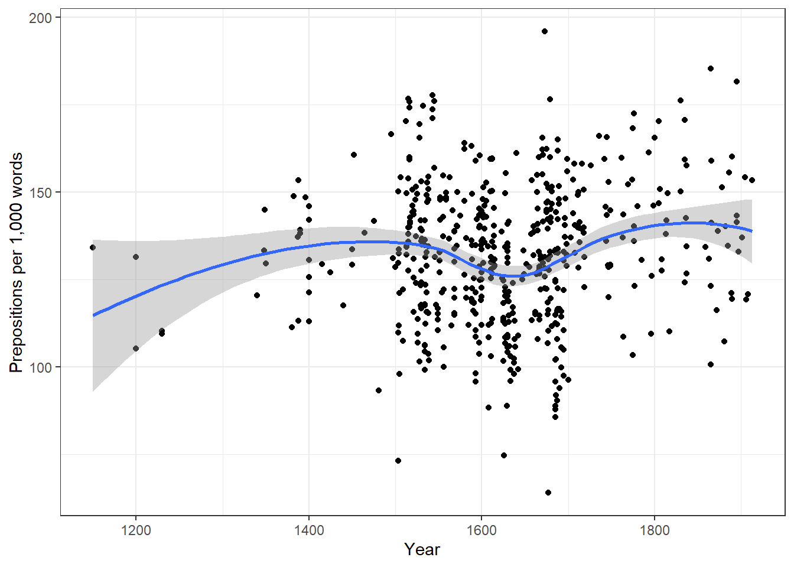
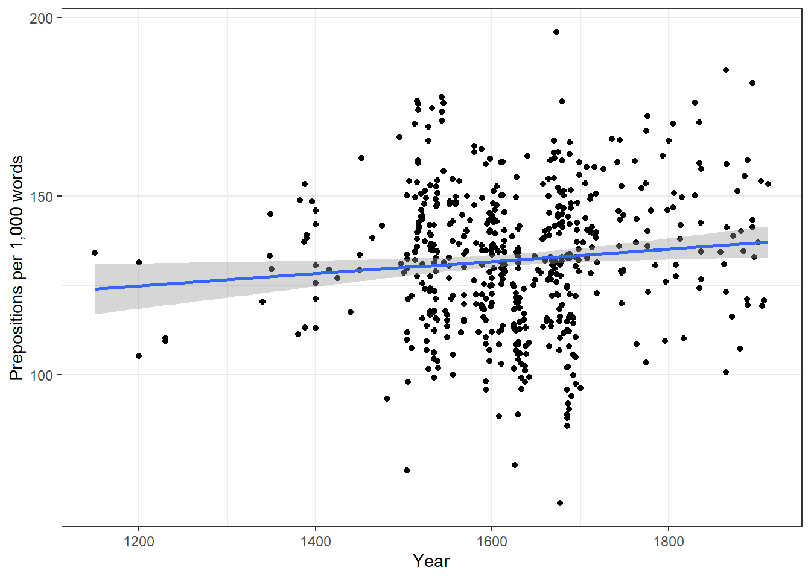
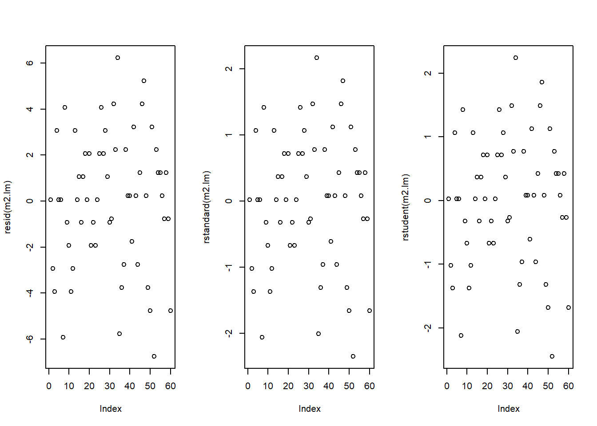

Simple Linear Regression
UQ SLC Digital Team
2019-07-25

1 Introduction
This tutorial introduces linear regressions with “R”. The entire code for the sections below can be downloaded here.
2 Preparation
As all caluculations and visualizations in this tutorial rely on “R”, it is necessary to install “R”, “RStudio”, and “Tinn-R”. If these programms (or, in the case of “R”, environments) are not installed yet, please search for them in your favorite search engine and add the term “download”. Open any of the first few links and follow the installation instructions (they are easy to follow, do not require any specifications, and are pretty much self-explanatory).
In addition, certain “libraries” need to be installed so that the scripts shown below are executed without errors. Before turning to the code below, please install the libraries needed for running the code below. If you have already installed the libraries mentioned below, then you can skip ahead ignore this section. To install the necessary libraries, simply run the following code - it may take some time (between 1 and 5 minutes to install all of the libraries so you do not need to worry if it takes some time).
# clean current workspace
rm(list=ls(all=T))
# set options
options(stringsAsFactors = F)
# install libraries
install.packages(c("calibrate", "car", "ggplot2", "QuantPsyc"))Once you have installed “R”, “R-Studio”, “Tinn-R”, and have also initiated the session by executing the code shown above, you are good to go.
3 Simple Linear Regression
This section focuses on a very widely used statistical method which is called regression. Regressions are used when we try to understand how independent variables correlate with a dependent or outcome variable. So, if you want to investigate how certain criteria affect an outcome, then a regression is the way to go. We will have a look at two simple examples to understand what the concepts underlying a regression mean and how a regression works. After that, we will turn to a more complex case and we will implement a multiple linear regression. The R-Code, that we will use, is based on (A. Field, Miles, and Field 2012).
3.1 Introduction
Although the basic logic underlying regressions is identical to the conceptual underpinnings of analysis of variance (ANOVA), a related method, sociolinguistists have traditionally favoured regression analysis in their studies while ANOVAs have been the method of choice in psycholinguistics. The preference for either method is grounded in historical happenstances and the culture of these subdisciplines rather than in methodological reasoning.
A minor difference between regressions and ANOVA lies in the fact that regressions are based on the \(t\)-distribution while ANOVAs use the \(F\)-distribution (however, the \(F\)-value is merely t2). Both \(t\)- and \(F\)-values report on the ratio between explained and unexplained variance.
The idea behind regression analysis is expressed formally in equation and can best be described graphically: Imagine drawing a line through points in a scatterplot (Grafik left panel).
\(f_{(x)} = \alpha + \beta_{1}x_{i} + \epsilon\) {#eq:slm}
Regressions aim to find that line which has the minimal summed distance between points and the line (Figure centre panel). Technically speaking, the aim of a regression is to find the line with the minimal deviance or the line with the minimal sum of residuals (variance) (Figure right panel). This means that the sum of the length of the lines between the points and the lines should be minimal. The slope of the line is called coefficient and the point where the line crosses the y-axis is called the intercept.

A word about standard errors (SE) is in order here because most commonly used statistics programs will provide SE values when reporting regression models. The SE is a measure that tells us how much the coefficients were to vary if the same regression were applied to many samples from the same population. A relatively small SE value therefore indicates that the coefficients will remain very stable if the same regression model is fitted to many different samples with identical parameters. In contrast, a large SE tells you that the model is volatile and not very stable or reliable as the coefficients vary substantially if the model is applied to many samples.
4 Example 1: Preposition Use across Real-Time
We will now turn to our first example. In this example, we will investigate whether the frequency of prepositions has changed from Middle English to Late Modern English. The reasoning behind this example is that Old English was highly synthetic compared with Present-Day English which comparatively analytic. In other words, while Old English speakers used case to indicate syntactic relations, speakers of Present-Day English use word order and prepositions to indicate syntactic relationships. This means that the loss of case had to be compensated by different strategies and maybe these strategies continued to develop and increase in frequency even after the change from synthetic to analytic had been mostly accomplished. And this prolonged change in compensatory strategies is what this example will focus on.
The analysis is based on data extracted from the Penn Corpora of Historical English (see http://www.ling.upenn.edu/hist-corpora/), that consists of 603 texts written between 1125 and 1900. In preparation of this example, all elements that were part-of-speech tagged as prepositions were extracted from the PennCorpora.
Then, the relative frequencies (per 1,000 words) of prepositions per text were calculated. This frequency of prepositions per 1,000 words represents our dependent variable. In a next step, the date when each letter had been written was extracted. The resulting two vectors were combined into a table which thus contained for each text, when it was written (independent variable) and its relative frequency of prepositions (dependent or outcome variable).
A regression analysis will follow the steps described below: 1. Extraction and processing of the data 2. Data visualization 3. Applying the regression analysis to the data 4. Diagnosing the regression model and checking whether or not basic model assumptions have been violated.
In a first step, we load the libraries and functions.
# load libraries
library(car) # activate car package
library(ggplot2) # activate ggplot2 package
library(QuantPsyc) # activate QuantPsyc package
source("rscripts/multiplot_ggplot2.r") # load multiplot function
source("rscripts/slr.summary.tb.r") # load regression summary functionAfter preparing our session, we can now load and inspect the data to get a first impression of its properties.
slrdata <- read.delim("data/slrdata.txt", header = TRUE) # load data
attach(slrdata) # attach data
slrdata <- as.data.frame(cbind(datems, pptw)) # remove superfluous columns
colnames(slrdata) <- c("year", "prep.ptw") # add column names
slrdata <- slrdata[!is.na(slrdata$year) == T,] # remove NAs from data
str(slrdata) # inspect structure of the data## 'data.frame': 603 obs. of 2 variables:
## $ year : num 1736 1711 1808 1878 1743 ...
## $ prep.ptw: num 166 140 131 151 146 ...| year | prep.ptw |
|---|---|
| 1736 | 166.01 |
| 1711 | 139.86 |
| 1808 | 130.78 |
| 1878 | 151.29 |
| 1743 | 145.72 |
| 1807 | 152.59 |
Inspecting the data is very important because it can happen that a data set may not load completely or that variables which should be numeric have been converted in character variables. If unchecked, then such hidden data issues could go unnoticed and cause much trouble once you realize that the data you have been working with is different from what you had in mind.
We will now plot the data to get a more thorough impression of the structure of the data.
ggplot(slrdata, aes(year, prep.ptw)) +
geom_point() +
theme_bw() +
labs(x = "Year") +
labs(y = "Prepositions per 1,000 words") +
geom_smooth()
ggplot(slrdata, aes(year, prep.ptw)) +
geom_point() +
theme_bw() +
labs(x = "Year") +
labs(y = "Prepositions per 1,000 words") +
geom_smooth(method = "lm") # with linear model smoothing!
Before beginning with the regression analysis, we will scale the year. We scale by subtracting each value from the mean of year. This can be useful when dealing with numeric variables because if we did not scale year, we would get estimated values for year 0 (a year when English did not even exist yet). If a variable is scaled, the regression provides estimates of the model refer to the mean of that numeric variable. In other words, scaling can eb very helpful, especially with respect to the interpretation of the results that regression models report.
slrdata$prep.ptw <- slrdata$prep.ptw - mean(slrdata$prep.ptw) # scaling dateWe will now begin the regression analysis by generating a first regression model. Once the regression model is generated, we will inspect its results and check if certain mathematical assumptions have been violated or whether the data contains outliers. diagnostic plots.
# create initial model
prep.lm <- lm(prep.ptw ~ year, data = slrdata)
# inspect results
summary(prep.lm)##
## Call:
## lm(formula = prep.ptw ~ year, data = slrdata)
##
## Residuals:
## Min 1Q Median 3Q Max
## -66.842 -13.523 1.183 14.086 65.117
##
## Coefficients:
## Estimate Std. Error t value Pr(>|t|)
## (Intercept) -27.723706 10.863978 -2.552 0.0110 *
## year 0.017128 0.006691 2.560 0.0107 *
## ---
## Signif. codes: 0 '***' 0.001 '**' 0.01 '*' 0.05 '.' 0.1 ' ' 1
##
## Residual standard error: 21.11 on 601 degrees of freedom
## Multiple R-squared: 0.01079, Adjusted R-squared: 0.00914
## F-statistic: 6.553 on 1 and 601 DF, p-value: 0.01071# plot model: 3 plots per row in one window
par(mfrow = c(1, 3))
plot(resid(prep.lm))
plot(rstandard(prep.lm))
plot(rstudent(prep.lm))
par(mfrow = c(1, 1)) # restore default parametersThe left graph shows the residuals of the model (i.e., the differences between the observed and the values predicted by the regression model). The problem with this plot is that the residuals are not standardized and so they cannot be compared to the residuals of other models. To remedy this deficiency, residuals are normalized by dividing the residuals by their standard deviation. Then, the normalized residuals can be plotted against the observed values (centre panel). In this way, not only are standardized residuals obtained, but the values of the residuals are transformed into z-values, and one can use the z-distribution to find problematic data points. There are three rules of thumb regarding finding problematic data points through standardized residuals (A. Field, Miles, and Field 2012, 268–69):
- Points with values higher than 3.29 should be removed from the data.
- If more than 1% of the data points have values higher than 2.58, then the error rate of our model is too high.
- If more than 5% of the data points have values greater than 1.96, then the error rate of our model is too high.
The right panel shows the * studentized residuals* (adjusted predicted values: each data point is divided by the standard error of the residuals). In this way, it is possible to use Student’s t-distribution to diagnose our model.
Adjusted predicted values are residuals of a special kind: the model is calculated without a data point and then used to predict this data point. The difference between the observed data point and its predicted value is then called the adjusted predicted value. In summary, studentized residuals are very useful because they allow us to identify influential data points.
The plots show that there are two potentially problematic data points (the top-most and bottom-most point). These two points are clearly different from the other data points and may therefore be outliers. We will test later if these points need to be removed.
We will now generate more diagnostic plots.
par(mfrow = c(2, 2)) # plot window: 2 plots/row, 2 plots/column
plot(prep.lm) # generate diagnostic plots
par(mfrow = c(1, 1)) # restore normal plot windowThe diagnostic plots are very positive and we will go through why this is so for each panel. The graph in the upper left panel is useful for finding outliers or for determining the correlation between residuals and predicted values: when a trend becomes visible in the line or points (e.g., a rising trend or a zigzag line), then this would indicate that the model would be problematic (in such cases, it can help to remove data points that are too influential (outliers)).
The graphic in the upper right panel indicates whether the residuals are normally distributed (which is desirable) or whether the residuals do not follow a normal distribution. If the points lie on the line, the residuals follow a normal distribution. For example, if the points are not on the line at the top and bottom, it shows that the model does not predict small and large values well and that it therefore does not have a good fit.
The graphic in the lower left panel provides information about homoscedasticity. Homoscedasticity means that the variance of the residuals remains constant and does not correlate with any independent variable. In unproblematic cases, the graphic shows a flat line. If there is a trend in the line, we are dealing with heteroscedasticity, that is, a correlation between independent variables and the residuals, which is very problematic for regressions.
The graph in the lower right panel shows problematic influential data points that disproportionately affect the regression (this would be problematic). If such influential data points are present, they should be either weighted (one could generate a robust rather than a simple linear regression) or they must be removed. The graph displays Cook’s distance, which shows how the regression changes when a model without this data point is calculated. The cook distance thus shows the influence a data point has on the regression as a whole. Data points that have a Cook’s distance value greater than 1 are problematic (A. Field, Miles, and Field 2012, 269).
The so-called leverage is also a measure that indicates how strongly a data point affects the accuracy of the regression. Leverage values range between 0 (no influence) and 1 (strong influence: suboptimal!). To test whether a specific data point has a high leverage value, we calculate a cut-off point that indicates whether the leverage is too strong or still acceptable. The following two formulas are used for this:
\[\begin{equation} \frac{3(k + 1)}{n} \end{equation}\]or
\[\begin{equation} \frac{2(k + 1)}{n} \end{equation}\]We will look more closely at leverage in the context of multiple linear regression and will therefore end the current analysis by summarizing the results of the regression analysis in a table.
slrtb <- slr.summary(prep.lm) # tabulate results
library(knitr) # activate library for tabulating
kable(slrtb, caption = "Results of a simple linear regression analysis.")| Estimate | Std. Beta | Pearson’s r | Std. Error | t value | Pr(>|t|) | P-value sig. | |
|---|---|---|---|---|---|---|---|
| (Intercept) | -27.72 | 10.86 | -2.55 | 0.011 | p < .05* | ||
| year | 0.02 | 0.1039 | 0.1 | 0.01 | 2.56 | 0.0107 | p < .05* |
| Model statistics | Value | ||||||
| Number of cases in model | 603 | ||||||
| Residual standard error on 601 DF | 21.11 | ||||||
| Multiple R-squared | 0.0108 | ||||||
| Adjusted R-squared | 0.0091 | ||||||
| F-statistic (1, 601) | 6.55 | ||||||
| Model p-value | 0.0107 |
Typically, the results of regression analyses are presented in such tables as they include all important measures of model quality and significance, as well as the magnitude of the effects. In addition, the results of simple linear regressions should be summarized in writing. An example of how the results of a regression analysis can be written up is provided below.
A simple linear regression has been fitted to the data. A visual assessment of the model diagnostic graphics did not indicate any problematic data points (outliers) or disproportionately influential data points and pointed to a good model fit. The final linear regression model is based on 603 data points and correlates highly significantly with the data (R2: 0.0108, F-statistic (1, 601): 6,553, p-value: 0.0107*) and confirms a significant and positive correlation between the year in which the text was written and the relative frequency of prepositions (coefficient: .02, standardized \(\beta\): 0.1039, SE: 0.01, t-value: 2.560, p-value:. 0107*).
5 Example 2: Teaching Styles
In the previous example, we dealt with two numeric variables, while the following example deals with a categorical independent variable and a numeric dependent variable. The ability for regressions to handle very different types of variables makes regressions a widely used and robust method of analysis.
In this example, we are dealing with two groups of students that have been randomly assigned to groups which are exposed to different teaching methods. Both groups undergo a language learning test after the lesson with a maximum score of 20 points.
The students of the first group (group A) have reached the following scores:
- Group A: 15, 12, 11, 18, 15, 15, 9, 19, 14, 13, 11, 12, 18, 15, 16, 14, 16, 17, 15, 17, 13, 14, 13, 15, 17, 19, 17, 18, 16, 14 (mean: 14,93)
The students of the second group (group B) have reached the following scores:
- Group B: 11, 16, 14, 18, 6, 8, 9, 14, 12, 12, 10, 15, 12, 9, 13, 16, 17, 12, 8, 7, 15, 5, 14, 13, 13, 12, 11, 13, 11, 7 (mean: 11,77)
Our question is whether group A has performed significantly better than group B which would indicate that the teaching method to which group A was exposed works better than the teaching method to which group B was exposed.
Let’s move on to implementing the regression in “R”. As in the previous example, we start by activating libraries and loading functions.
# load libraries
library(car) # activate car package
library(ggplot2) # activate ggplot2 package
library(QuantPsyc) # activate QuantPsyc package
source("rscripts/multiplot_ggplot2.r") # load multiplot function
source("rscripts/slr.summary.tb.r") # load regression summary functionAfter the necessary specifications have been carried out, we generate the data set and inspect its structure.
# load data
slrdata2 <- read.delim("D:\\Uni\\UQ\\LADAL\\SLCLADAL.github.io\\data/slrdata2.txt", sep = "\t", header = T)
# inspect data
head(slrdata2); str(slrdata2)## Group Score
## 1 A 15
## 2 A 12
## 3 A 11
## 4 A 18
## 5 A 15
## 6 A 15## 'data.frame': 60 obs. of 2 variables:
## $ Group: Factor w/ 2 levels "A","B": 1 1 1 1 1 1 1 1 1 1 ...
## $ Score: int 15 12 11 18 15 15 9 19 14 13 ...Now, we graphically display the data. In this case, a boxplot represents a good way to visualize the data.
boxplot(Score ~ Group, # create box plot
data = slrdata2, # the data we want to display
main = "", # empty title
ylab = "Score", # y-axis label
ylim = c(0, 20), # y-axis rage
xlab = c("Group"), # x-axis albel
notch = T, # show notches
col = c("lightgreen", "lightblue")) # define colours
text(1:2, # add text
c(4.0, 4.0), # y-axis position
cex = 0.85, # font size
labels = paste("mean\n",
c(round(as.vector(by(slrdata2$Score, slrdata2$Group, mean))[1], 2),
round(as.vector(by(slrdata2$Score, slrdata2$Group, mean))[2], 2),
sep = "")))
rug(jitter(slrdata2$Score),
side=4)
box()Darstellung der Sprachtestdaten
The data indicate that group A did significantly better than group B. We will test this impression by generating the regression model and creating the model diagnostic graphics in the next step.
sprtest.lm <- lm(Score ~ Group, data = slrdata2) # generate regression model
summary(sprtest.lm) # inspect results##
## Call:
## lm(formula = Score ~ Group, data = slrdata2)
##
## Residuals:
## Min 1Q Median 3Q Max
## -6.767 -1.933 0.150 2.067 6.233
##
## Coefficients:
## Estimate Std. Error t value Pr(>|t|)
## (Intercept) 14.9333 0.5346 27.935 < 2e-16 ***
## GroupB -3.1667 0.7560 -4.189 9.67e-05 ***
## ---
## Signif. codes: 0 '***' 0.001 '**' 0.01 '*' 0.05 '.' 0.1 ' ' 1
##
## Residual standard error: 2.928 on 58 degrees of freedom
## Multiple R-squared: 0.2322, Adjusted R-squared: 0.219
## F-statistic: 17.55 on 1 and 58 DF, p-value: 9.669e-05par(mfrow = c(1, 3)) # plot window: 1 plot/row, 3 plots/column
plot(resid(sprtest.lm)) # generate diagnostic plot
plot(rstandard(sprtest.lm)) # generate diagnostic plot
plot(rstudent(sprtest.lm)) # generate diagnostic plot
par(mfrow = c(1, 1)) # restore normal plot windowThe graphics do not indicate outliers or other issues, so we can continue with more diagnostic graphics.
par(mfrow = c(2, 2)) # generate a plot window with 2x2 panels
plot(sprtest.lm) # generate diagnostic plots
par(mfrow = c(1, 1)) # restore normal plot windowThese graphics also show no problems. In this case, the data can be summarized in the next step.
# tabulate results
slrtb2 <- slr.summary(sprtest.lm)
library(knitr)
kable(slrtb2, caption = "Results of a simple linear regression analysis.")| Estimate | Std. Beta | Pearson’s r | Std. Error | t value | Pr(>|t|) | P-value sig. | |
|---|---|---|---|---|---|---|---|
| (Intercept) | 14.93 | 0.53 | 27.94 | 0 | p < .001*** | ||
| GroupB | -3.17 | -0.4819 | 0.48 | 0.76 | -4.19 | 1e-04 | p < .001*** |
| Model statistics | Value | ||||||
| Number of cases in model | 60 | ||||||
| Residual standard error on 58 DF | 2.93 | ||||||
| Multiple R-squared | 0.2322 | ||||||
| Adjusted R-squared | 0.219 | ||||||
| F-statistic (1, 58) | 17.55 | ||||||
| Model p-value | 1e-04 |
The results of this second simple linear regressions can be summarized as follows:
A simple linear regression was fitted to the data. A visual assessment of the model diagnostic graphics did not indicate any problematic data points (outliers) or disproportionately influential data points and pointed to a good model fit. The final linear regression model is based on 60 data points and correlates highly significantly with the data (R2: 0.2322, F statistic (1, 58): 2.93, p-value <. 001***) and confirms that group A scored significantly better on the language learning test than group B (coefficient: -3.17, standardized \(\beta\): -0.4819, SE: 0.48, t-value: -4.19, p-value <. 001 ***).
Exercise Time!
Load the data set called mblrdata by executing the following command in R:
slrdata3 <- read.delim("data/mlrdata.txt", header = TRUE) # load data
attach(slrdata3) # attach data
slrdata3$attraction <- NULL # remove superfluous columns
str(slrdata3) # inspect structure of the data## 'data.frame': 100 obs. of 2 variables:
## $ status: Factor w/ 2 levels "Relationship",..: 1 1 1 1 1 1 1 1 1 1 ...
## $ money : num 86.3 45.6 68.4 52.9 61.9 ...Perform a regression analysis that analyses if the money spend on a present for someone (money) depends on the receiver’s relationship status (status).
References
Field, Andy, Jeremy Miles, and Zoe Field. 2012. Discovering Statistics Using R. Sage.